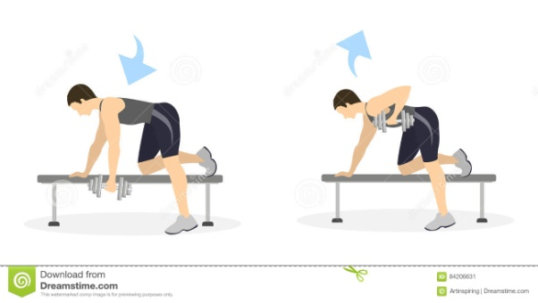
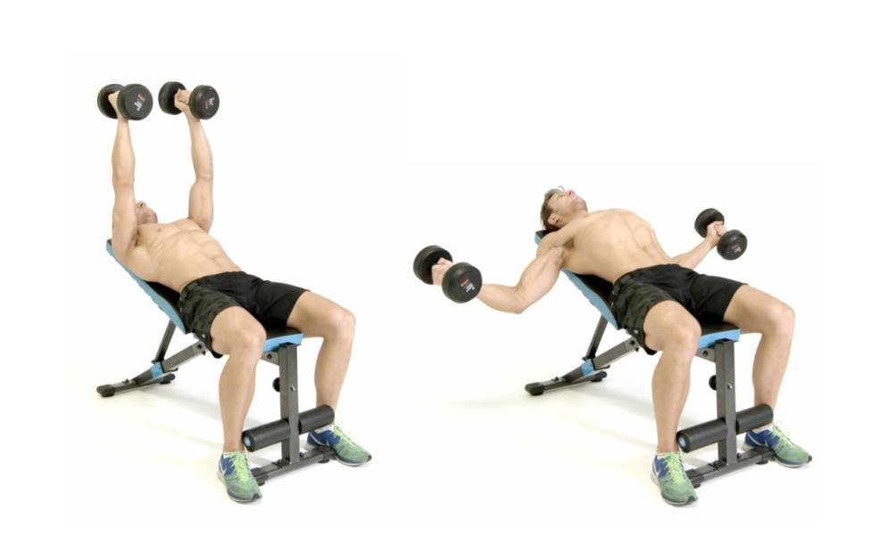
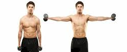
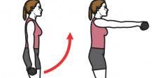
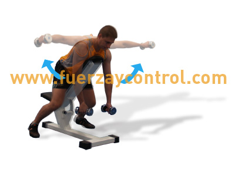
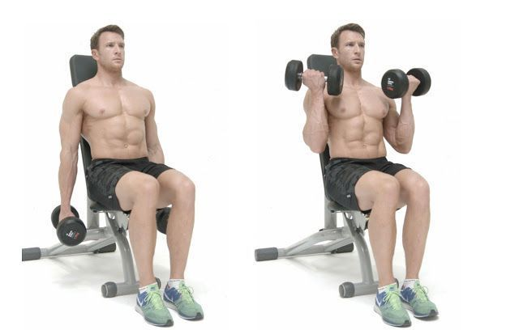
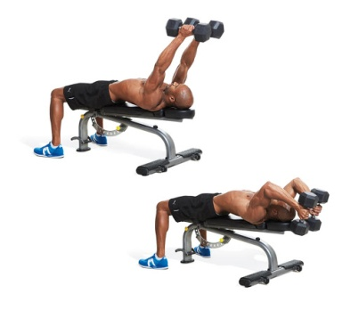

Activación articular a través de movimientos en diferentes arcos de movimiento. Realizar 20 repeticiones de cada ejercicio propuesto.
Iniciar con estos ejercicios por las primeras dos semanas.
Los ejercicios deben generar fatiga muscular (cansancio muscular) durante las ultimas repeticiones de
cada serie.
-
Planchas: mantener apoyo sobre los antebrazos y los pies, elevando la parte central del cuerpo,
mantener durante 15 segundos. Realizar 10 repetiones.

-
En la misma posición del ejercicio anterior (planchas), flexionar los codos, acercando el pecho a
la superficie, realizar 3 series de 7 repeticiones.

-
Abdominales: mantener rodillas dobladas, manos sobre los muslos, subir hasta que las
escapulas se despeguen de la superficie y las manos lleguen a las rodillas. Realizar 3 series de 10
repeticiones.

-
Sentadillas: pies separados al ancho de las caderas, espalda recta y brazos extendidos al frente,
bajar flexionando las rodillas imitando el gesto de sentarse, al bajar la rodilla no debe superar la
punta de los pies (rodillas y caderas forman un angulo de 90°). Realizar 3 series de 15
repeticiones.

-
Zancadas: de pie, manos en la cintura, piernas separadas al ancho de las caderas, dar un paso
hacia adelante doblando la rodilla maximo 90°, manteniendo el tronco recto, la rodilla que
queda atrás se flexiona acercandose al suelo y el pie queda apoyado solamente en la punta.
Regresar a la posición inicial. Realizar 3 series de 10 repeticiones con cada pierna.

Iniciar con cargas indicadas de acuerdo a cada grupo muscular, realizar 3 series de 20 repeticiones
durante 3 semanas (21 dias), en la cuarta semana aumentar una serie mas; y en la sexta semana
aumentar el peso 1kg o al color siguiente (en caso de las bandas elásticas) si hay confort en la realización
de los ejercicios con las cargas manejadas. Entre una y otra serie de cada ejercicio debe realizarse una
fase de descanso de 1 minuto.
-
Espalda: rodilla y brazo del mismo lado apoyados en el banco, tomar mancuerna con la mano
opuesta y el brazo estirado, el pie del mismo lado apoyado en el suelo con la rodilla recta, elevar
el codo flexionado hacia el techo y descender de inmediato. Peso: 3 kg. 3 series de 20
repeticiones en cada brazo.

-
Pectorales: banco en inclinación intermedia, espalda apoyada, mancuernas en ambas manos
iniciando con brazos separados del cuerpo 90°, codos semiflexionados, llevar los brazos hacia
arriba con los codos estirados acercando una mano a la otra. Peso: 3 kg, 3 series de 20
repeticiones.

-
Deltoides medio: banco en posición vertical, espalda apoyada, brazos extendidos a los lados del
cuerpo, separar los brazos llevando las manos a la altura de los hombros. Peso 3 kg, 2 series 10
repeticiones.

-
Deltoides anterior: banco en posición vertical, espalda apoyada, brazos extendidos a los lados
del cuerpo, elevar los brazos hacia el frente, llevando las manos a la altura de los hombros. Peso
3 kg, 2 series 10 repeticiones.

-
Deltoides posterior y trapecios: banco en posición intermedia, acostado boca abajo, brazos
relajados hacia adelante, pulgares orientados uno frente al otro, elevar lateralmente las
mancuernas hasta la altura de la cabeza con los brazos. Peso: 3 kg, 3 series de 10 repeticiones.

-
Bíceps: banco en posición vertical, espalda apoyada, iniciar con codos extendidos, luego
flexionarlos acercando las mancuernas hacia los hombros, alternar brazo izquierdo y brazo
derecho. Peso 5 kg, 3 series 10 repeticiones.

-
Tríceps: banco en posición horizontal, espalda apoyada, iniciar con codos flexionados y las
manos por encima de la cabeza, extender los codos hasta que las manos queden a la misma
altura de los hombros. Peso 3 kg, 3 series de 10 repeticiones.
